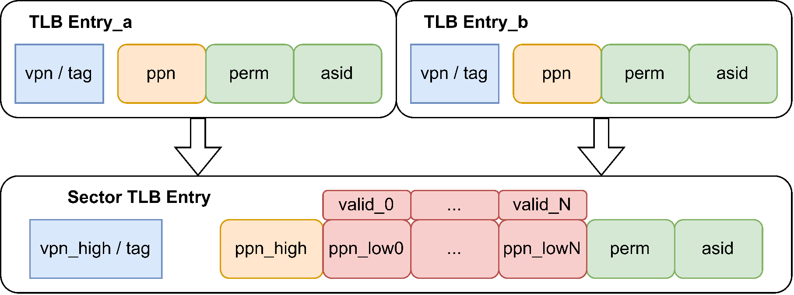
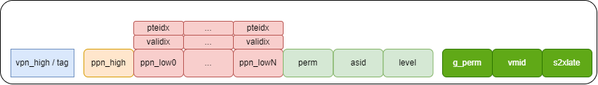
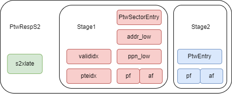
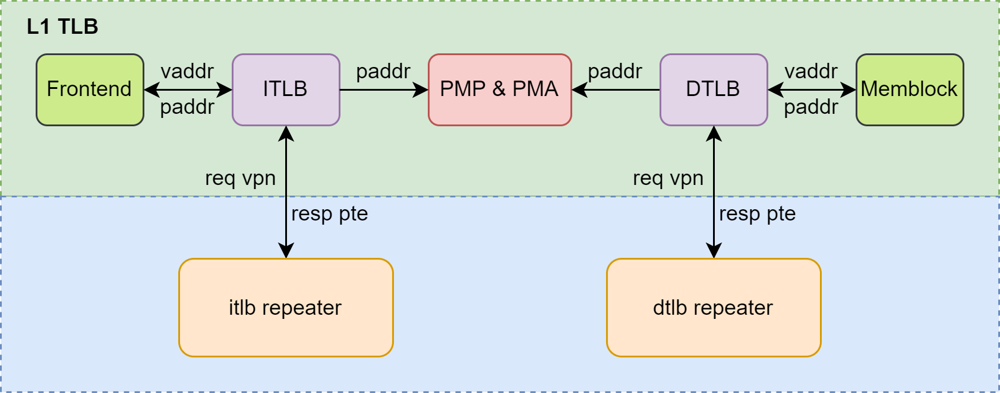
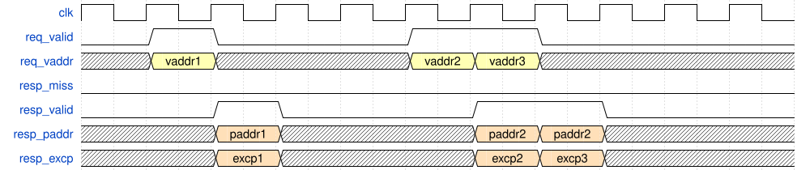
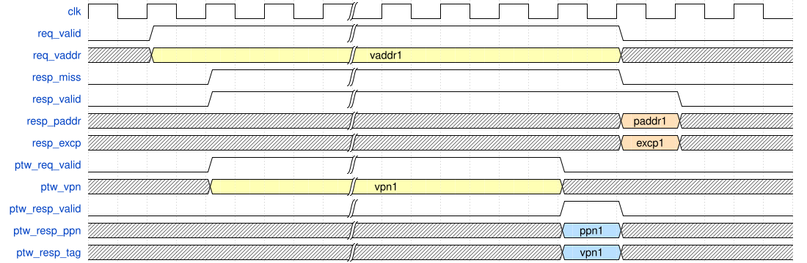
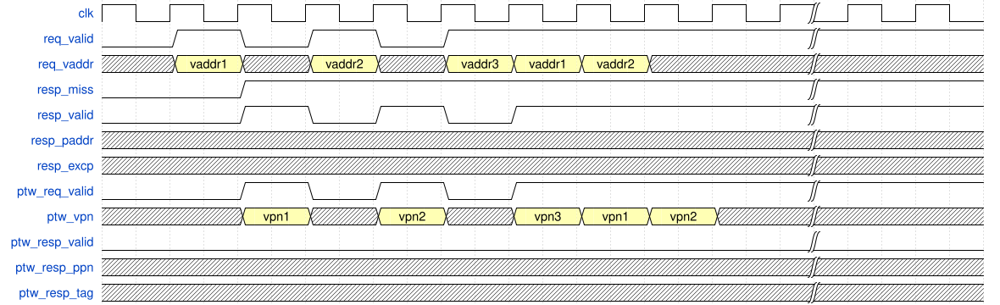
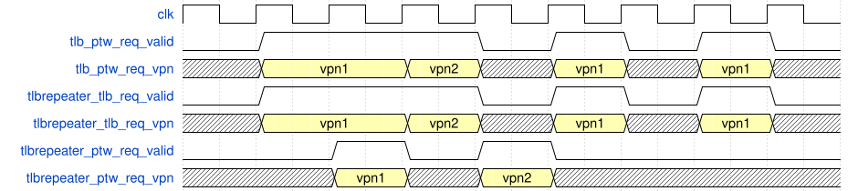
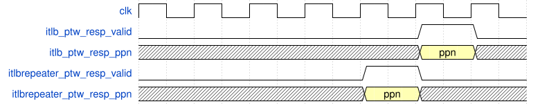
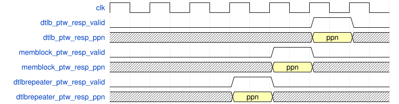

L1 TLB
設計仕様
- FrontendとMemBlockからのアドレス変換要求の受信をサポート
- PLRU置換アルゴリズムをサポート
- FrontendとMemBlockへの物理アドレスの返却をサポート
- ITLBとDTLBはともにノンブロッキングアクセスを採用
- ITLBとDTLBのエントリはともにレジスタファイルで実装
- ITLBとDTLBのエントリはともに全 ASSOCIATIVE 構造
- ITLBとDTLBはそれぞれプロセッサの現在の特権レベルとメモリアクセス実行時の有効な特権レベルを使用
- L1 TLB内部での仮想メモリの有効/無効および2段階変換の有効/無効の判断をサポート
- L2 TLBへのPTW要求の送信をサポート
- DTLBはクエリで返された物理アドレスのコピーをサポート
- 例外処理をサポート
- TLB圧縮をサポート
- TLBヒントメカニズムをサポート
- 4種類のTLBエントリを格納
- TLBリフィルは2段階のページテーブルを融合
- TLBエントリのヒット判定ロジック
- ゲストページフォルト後のgpaddr取得のためのPTW再送をサポート
機能
FrontendとMemBlockからのアドレス変換要求の受信
コア内でのメモリ読み書き（フロントエンドの命令フェッチとバックエンドのメモリアクセスを含む）の前に、L1 TLBによるアドレス変換が必要です。物理的な距離が遠く、相互汚染を避けるため、フロントエンドの命令フェッチ用のITLB（Instruction TLB）とバックエンドのメモリアクセス用のDTLB（Data TLB）に分かれています。ITLBは全 ASSOCIATIVE モードを採用し、48エントリの全 ASSOCIATIVE で全てのページサイズを保存します。ITLBはFrontendからのアドレス変換要求を受け取ります。itlb_requestors(0)からitlb_requestors(2)はicacheから、そのうちitlb_requestors(2)はicacheのプリフェッチ要求です。itlb_requestors(3)はifuからで、MMIO命令のアドレス変換要求です。
ITLBのエントリ設定と要求元はそれぞれ此表、此表に示します。
| エントリ名 | エントリ数 | 構成 | 置換アルゴリズム | 格納内容 |
|---|---|---|---|---|
| Page | 48 | 全 ASSOCIATIVE | PLRU | 全てのページサイズ |
| シーケンス番号 | ソース |
|---|---|
| requestors(0) | Icache, mainPipe |
| requestors(1) | Icache, mainPipe |
| requestors(2) | Icache, fdipPrefetch |
| requestors(3) | IFU |
XiangShanのメモリアクセスチャネルには、2つのLoadパイプライン、2つのStoreパイプライン、SMSプリフェッチャ、L1 Load stream & strideプリフェッチャがあります。多数の要求に対応するため、2つのLoadパイプラインとL1 Load stream & strideプリフェッチャはLoad DTLBを使用し、2つのStoreパイプラインはStore DTLBを使用し、プリフェッチ要求はPrefetch DTLBを使用します。合計3つのDTLBがあり、すべてPLRU置換アルゴリズムを採用しています（5.1.1.2節参照）。
DTLBは全 ASSOCIATIVE モードを採用し、48エントリの全 ASSOCIATIVE で全てのページサイズを保存します。DTLBはMemBlockからのアドレス変換要求を受け取ります。dtlb_ldはloadUnitsとL1 Load stream & strideプリフェッチャからの要求を受け取り、Load命令のアドレス変換を担当します。dtlb_stはStoreUnitsからの要求を受け取り、Store命令のアドレス変換を担当します。特に、AMO命令はloadUnit(0)のdtlb_ld_requestorを使用し、dtlb_ldに要求を送信します。SMSPrefetcherは別のDTLBにプリフェッチ要求を送信します。
DTLBのエントリ設定と要求元はそれぞれ此表、此表に示します。
| エントリ名 | エントリ数 | 構成 | 置換アルゴリズム | 格納内容 |
|---|---|---|---|---|
| Page | 48 | 全 ASSOCIATIVE | PLRU | 全てのページサイズ |
| モジュール | シーケンス番号 | ソース |
|---|---|---|
| DTLB_LD | ||
| ld_requestors(0) | loadUnit(0), AtomicsUnit | |
| ld_requestors(1) | loadUnit(1) | |
| ld_requestors(2) | loadUnit(2) | |
| ld_requestors(3) | L1 Load stream & stride Prefetch | |
| DTLB_ST | ||
| st_requestors(0) | StoreUnit(0) | |
| st_requestors(1) | StoreUnit(1) | |
| DTLB_PF | ||
| pf_requestors(0) | SMSPrefetch | |
| pf_requestors(1) | L2 Prefetch |
PLRU置換アルゴリズムの採用
L1 TLBは設定可能な置換戦略を採用しており、デフォルトはPLRU置換アルゴリズムです。Nanhuアーキテクチャでは、ITLBとDTLBはともにNormalPageとSuperPageを含み、リフィル戦略は複雑です。NanhuアーキテクチャのITLBのNormalPageは4KBページの変換を担当し、SuperPageは2MBと1GBページの変換を担当します。リフィルするページのサイズ（4KB、2MB、1GB）に応じてNormalPageまたはSuperPageに書き込む必要があります。NanhuアーキテクチャのDTLBのNormalPageは4KBページの変換を担当し、SuperPageは全てのページサイズの変換を担当します。NormalPageはダイレクトマップで、エントリ数は多いですが利用率は低いです。SuperPageは全 ASSOCIATIVE で、利用率は高いですがタイミングの制約からエントリ数が少なく、ミス率が高いです。
Kunminghuアーキテクチャでは、上記の問題を最適化し、タイミングを満たす条件下で、ITLBとDTLBを統一して48エントリの全 ASSOCIATIVE 構造に設定し、任意のサイズのページをリフィルできるようにしました。ITLBとDTLBはともにPLRU置換戦略を採用しています。
ITLBとDTLBのリフィル戦略を此表に示します。
| モジュール | エントリ名 | 戦略 |
|---|---|---|
| ITLB | ||
| Page | 48エントリ全 ASSOCIATIVE、任意のサイズのページをリフィル可能 | |
| DTLB | ||
| Page | 48エントリ全 ASSOCIATIVE、任意のサイズのページをリフィル可能 |
FrontendとMemBlockへの物理アドレスの返却
L1 TLBが仮想アドレスから物理アドレスを取得した後、FrontendとMemBlockにそれぞれの要求の物理アドレス、および要求がミスしたか、ゲストページフォルト、ページフォルト、アクセスフォルトが発生したかなどの情報を返します。FrontendまたはMemBlockの各要求に対して、ITLBまたはDTLBから応答が送信され、tlb_requestor(i)_resp_validで応答が有効であることを示します。
Nanhuアーキテクチャでは、SuperPageとNormalPageは物理的にはともにレジスタファイルで実装されていますが、SuperPageは16エントリの全 ASSOCIATIVE 構造、NormalPageはダイレクトマップ構造です。ダイレクトマップのNormalPageからデータを読み出した後、さらにタグの比較が必要です。SuperPageの全 ASSOCIATIVE エントリ数は16ですが、毎回1エントリしかヒットせず、hitVecでヒットをマークし、SuperPageから読み出したデータを選択します。NormalPageのデータ読み出し+タグ比較の時間は、SuperPageのデータ読み出し+データ選択の時間よりもはるかに長いです。そのため、タイミングの観点から、dtlbはMemBlockにfast_miss信号を返し、SuperPageがミスしたことを示します。miss信号はSuperPageとNormalPageの両方がミスしたことを示します。
また、Nanhuアーキテクチャでは、DTLBのPMP & PMAチェックのタイミングが厳しいため、PMPを動的チェックと静的チェックの2つの部分に分ける必要があります（5.4節参照）。L2 TLBのページテーブルエントリがDTLBにリフィルされる際、同時にリフィルされるページテーブルエントリをPMPとPMAに送り、権限チェックを行います。チェック結果はDTLBに保存され、DTLBはMemBlockに静的チェックが有効であることとチェック結果を示す信号を別途返す必要があります。
Kunminghuアーキテクチャでは、TLBクエリのエントリ設定と対応するタイミングが最適化され、現在fast_missは廃止され、追加の静的PMP & PMAチェックも不要です。ただし、将来的にタイミングやその他の理由で復活する可能性があるため、ドキュメントの完全性と互換性のために前の2つの段落は残しておきます。Kunminghuアーキテクチャではfast_missと静的PMP & PMAチェックが廃止されたことに再度注意してください。
ブロッキングアクセスとノンブロッキングアクセス
Nanhuアーキテクチャでは、フロントエンドの命令フェッチはITLBに対してブロッキングアクセスを要求し、バックエンドのメモリアクセスはDTLBに対してノンブロッキングアクセスを要求します。実際には、TLB本体はノンブロッキングアクセスであり、要求の情報を保存しません。TLBがブロッキングアクセスまたはノンブロッキングアクセスを採用する理由は、要求元の要求によるものです。フロントエンドの命令フェッチがTLBミスした場合、TLBが結果を取得するのを待ってから命令をプロセッサのバックエンドに送って処理する必要があり、ブロッキングの効果を示します。一方、メモリアクセス操作はアウトオブオーダーでスケジューリングでき、ある要求がミスした場合、別のload/store命令をスケジューリングして実行を続けることができるため、ノンブロッキングの効果を示します。
Nanhuアーキテクチャの上記機能はTLBによって実現され、TLBはいくつかの制御ロジックを介して、ITLBがミスした場合、PTWを介してページテーブルエントリを取得するまで待機し続けます。Kunminghuの上記機能はICacheによって保証され、ITLBがミスしてICacheに報告された後、ICacheはヒットするまで同じ要求を再送し続け、ノンブロッキングアクセスの効果を保証します。
ただし、KunminghuアーキテクチャのITLBとDTLBはともにノンブロッキングであり、外部効果がブロッキングかノンブロッキングかにかかわらず、命令フェッチユニットまたはメモリアクセスユニットによって制御されます。
L1 TLBエントリの格納構造
XiangShanのTLBは、 ASSOCIATIVE モード、エントリ数、置換戦略など、構成を構成できます。デフォルト設定は、ITLBとDTLBがともに48エントリの全 ASSOCIATIVE 構造で、ともにレジスタファイルで実装されています（5.1.2.3節参照）。同じサイクルで同じアドレスに同時に読み書きする場合、バイパスを介して直接結果を得ることができます。
参照されるILTBまたはDTLBの構成：ともに全 ASSOCIATIVE 構造、エントリ数8/16/32/48。現在、全 ASSOCIATIVE /セット ASSOCIATIVE /ダイレクトマップのTLB構造をパラメータ化して変更することはサポートされておらず、手動でコードを修正する必要があります。
L1 TLB内部での仮想メモリの有効/無効および2段階変換の有効/無効の判断をサポート
XiangShanはRISC-VマニュアルのSv39ページテーブルをサポートしており、仮想アドレス長は39ビットです。XiangShanの物理アドレスは36ビットで、パラメータ化して変更可能です。
仮想メモリが有効かどうかは、特権レベルとSATPレジスタのMODEフィールドなどによって共同で決定され、この判断はTLB内部で完了し、TLBの外部には透過的です。特権レベルの説明については5.1.2.7節を参照してください。SATPのMODEフィールドについては、XiangShanのKunminghuアーキテクチャはMODEフィールドが8、つまりSv39ページングメカニズムのみをサポートし、それ以外の場合はillegal instruction faultを報告します。TLBの外部モジュール（Frontend、LoadUnit、StoreUnit、AtomicsUnitなど）から見ると、すべてのアドレスはTLBのアドレス変換を経ています。
H拡張を追加すると、アドレス変換が有効かどうかの判断には、2段階アドレス変換があるかどうかも判断する必要があります。2段階アドレス変換が有効になるには2つの要求があります。1つ目は、現在実行されているのが仮想化メモリアクセス命令であること、2つ目は、仮想化モードが有効で、かつVSATPまたはHGATPのMODEがゼロでないことです。このときのアドレス変換モードは以下の通りです。アドレス変換モードは、TLBで対応するタイプのページテーブルを検索し、L2TLBに送信するPTW要求に使用されます。
| VSATP Mode | HGATP Mode | 変換モード |
|---|---|---|
| 非0 | 非0 | allStage、2段階変換の両方あり |
| 非0 | 0 | onlyStage1、第1段階の変換のみ |
| 0 | 非0 | onlyStage2、第2段階の変換のみ |
L1 TLBの特権レベル
Riscvマニュアルの要求に従い、フロントエンドの命令フェッチ（ITLB）の特権レベルは現在のプロセッサの特権レベル、バックエンドのメモリアクセス（DTLB）の特権レベルはメモリアクセス実行時の有効な特権レベルです。現在のプロセッサの特権レベルとメモリアクセス実行時の有効な特権レベルはともにCSRモジュールで判断され、ITLBとDTLBに渡されます。現在のプロセッサの特権レベルはCSRモジュールに保存されています。メモリアクセス実行時の有効な特権レベルは、mstatusレジスタのMPRV、MPV、MPPビット、およびhstatusのSPVPによって共同で決定されます。仮想化メモリアクセス命令を実行する場合、メモリアクセス実行時の有効な特権レベルはhstatusのSPVPビットに保存されている特権レベルです。実行する命令が仮想化メモリアクセス命令でなく、MPRVビットが0の場合、メモリアクセス実行時の有効な特権レベルと現在のプロセッサの特権レベルは同じで、メモリアクセス実行時の有効な仮想化モードも現在の仮想化モードと同じです。MPRVビットが1の場合、メモリアクセス実行時の有効な特権レベルはmstatusレジスタのMPPに保存されている特権レベルで、メモリアクセス実行時の有効な仮想化モードはhstatusレジスタのMPVに保存されている仮想化モードです。ITLBとDTLBの特権レベルは表の通りです。
| モジュール | 特権レベル |
|---|---|
| ITLB | 現在のプロセッサの特権レベル |
| DTLB | 非仮想化メモリアクセス命令を実行する場合、mstatus.MPRV=0の場合は現在のプロセッサの特権レベルと仮想化モード、mstatus.MPRV=1の場合はmstatus.MPPに保存されている特権レベルとhstatus.MPVに保存されている仮想化モード |
PTW要求の送信
L1 TLBがミスした場合、L2 TLBにPage Table Walk要求を送信する必要があります。L1 TLBとL2 TLBの間には物理的な距離が長いため、中間にパイプラインステージを追加する必要があり、これをRepeaterと呼びます。また、repeaterは重複した要求をフィルタリングし、L1 TLBに重複エントリが出現するのを防ぐ機能を担う必要があります（5.2節参照）。そのため、ITLBまたはDTLBの第1レベルのRepeaterはFilterとも呼ばれます。L1 TLBはRepeaterを介してL2 TLBにPTW要求を送信し、PTW応答を受信します（5.3節参照）。
DTLBはクエリで返された物理アドレスのコピーをサポート
物理実装では、Memblockのdcacheとlsuは距離が遠いため、LoadUnitのload_s1ステージでhitVecを生成し、それをdcacheとlsuにそれぞれ送ると、深刻なタイミング問題を引き起こします。そのため、dcacheとlsuの近くで並行して2つのhitVecを生成し、それぞれdcacheとlsuに送る必要があります。Memblockのタイミング問題を解決するために、DTLBはクエリで得られた物理アドレスを2つコピーし、それぞれdcacheとlsuに送る必要があります。dcacheとlsuに送られる物理アドレスは完全に同じです。
例外処理メカニズム
ITLBで発生する可能性のある例外には、inst guest page fault、inst page fault、inst access faultがあり、すべて要求元のICacheまたはIFUに処理を委ねます。DTLBで発生する可能性のある例外には、load guest page fault、load page fault、load access fault、store guest page fault、store page fault、store access faultがあり、すべて要求元のLoadUnits、StoreUnits、またはAtomicsUnitに処理を委ねます。L1TLBはgpaddrを保存していないため、ゲストページフォルトが発生した場合、PTWを再実行する必要があります。本ドキュメントの第6部：例外処理メカニズムを参照してください。
ここでは、仮想アドレスから物理アドレスへの変換に関連する例外について補足説明します。例外を以下のように分類します。
- ページテーブルに関連する例外
- 非仮想化状況、または仮想化のVS-Stageの場合、ページテーブルに予約ビットが0でない/非整列/書き込み権限がないなど（詳細はマニュアル参照）が発生した場合、page faultを報告する必要があります。
- 仮想化段階のG-Stageの場合、ページテーブルに予約ビットが0でない/非整列/書き込み権限がないなど（詳細はマニュアル参照）が発生した場合、guest page faultを報告する必要があります。
- 仮想アドレスまたは物理アドレスに関連する例外
- アドレス変換プロセス中に、仮想アドレスまたは物理アドレスに関連する例外。この部分のチェックはL2 TLBのPTWプロセス中に行われます。
- 非仮想化状況、または仮想化のall-Stageの場合、G-stageのgvpnをチェックする必要があります。hgatpのmodeが8（Sv39x4を表す）の場合、gvpnの（41 - 12 = 29）ビット以上がすべて0である必要があります。hgatpのmodeが9（Sv48x4を表す）の場合、gvpnの（50 - 12 = 38）ビット以上がすべて0である必要があります。そうでない場合、guest page faultが報告されます。
- アドレス変換でページテーブルを取得したとき、ページテーブルのPPN部分の上位（48-12=36）ビット以上がすべて0である必要があります。そうでない場合、access faultが報告されます。
- 元のアドレスで、仮想アドレスまたは物理アドレスに関連する例外。具体的には以下の通りです。この部分は理論的にはL1 TLBでチェックする必要がありますが、ITLBのリダイレクト結果は完全にBackendから来るため、ITLBの対応するこの部分の例外はBackendがFrontendにリダイレクトを送信する際に記録され、ITLBで再度チェックされることはありません。Backendのこの部分の説明を参照してください。
- Sv39モード：仮想メモリが有効で、仮想化が有効でない場合（satpのmodeが8）、または仮想メモリが有効で、仮想化が有効な場合（vsatpのmodeが8）の2つの状況を含みます。このとき、vaddrの[63:39]ビットがvaddrの38ビット目と同じ符号である必要があります。そうでない場合、命令フェッチ/load/store要求に応じて、それぞれinstruction page fault、load page fault、store page faultを報告する必要があります。
- Sv48モード：仮想メモリが有効で、仮想化が有効でない場合（satpのmodeが9）、または仮想メモリが有効で、仮想化が有効な場合（vsatpのmodeが9）の2つの状況を含みます。このとき、vaddrの[63:48]ビットがvaddrの47ビット目と同じ符号である必要があります。そうでない場合、命令フェッチ/load/store要求に応じて、それぞれinstruction page fault、load page fault、store page faultを報告する必要があります。
- Sv39x4モード：仮想メモリが有効で、仮想化が有効で、vsatpのmodeが0で、hgatpのmodeが8である場合。（注：vsatpのmodeが8/9で、hgatpのmodeが8の場合、第2段階のアドレス変換もSv39x4モードであり、対応する例外が発生する可能性があります。しかし、この部分は「アドレス変換プロセス中に、仮想アドレスまたは物理アドレスに関連する例外」に属し、L2 TLBのページテーブルウォーク中に処理されるため、L1 TLBの処理範囲外です。L1 TLBは「元のアドレスで、仮想アドレスまたは物理アドレスに関連する例外」のみを別途処理します。）このとき、vaddrの[63:41]ビットがすべて0である必要があります。そうでない場合、命令フェッチ/load/store要求に応じて、それぞれinstruction guest page fault、load guest page fault、store guest page faultを報告する必要があります。
- Sv48x4モード：仮想メモリが有効で、仮想化が有効で、vsatpのmodeが0で、hgatpのmodeが9である場合。（注：vsatpのmodeが8/9で、hgatpのmodeが9の場合、第2段階のアドレス変換もSv48x4モードであり、対応する例外が発生する可能性があります。しかし、この部分は「アドレス変換プロセス中に、仮想アドレスまたは物理アドレスに関連する例外」に属し、L2 TLBのページテーブルウォーク中に処理されるため、L1 TLBの処理範囲外です。L1 TLBは「元のアドレスで、仮想アドレスまたは物理アドレスに関連する例外」のみを別途処理します。）このとき、vaddrの[63:50]ビットがすべて0である必要があります。そうでない場合、命令フェッチ/load/store要求に応じて、それぞれinstruction guest page fault、load guest page fault、store guest page faultを報告する必要があります。
- Bareモード：仮想メモリが有効でない場合、paddr = vaddrです。XiangShanプロセッサの物理アドレスは現在48ビットに限定されているため、vaddrの[63:48]ビットがすべて0である必要があります。そうでない場合、命令フェッチ/load/store要求に応じて、それぞれinstruction access fault、load access fault、store access faultを報告する必要があります。
上記の「元のアドレスでの」例外処理をサポートするために、L1 TLBはfullva（64ビット）とcheckfullva（1ビット）の入力信号を追加する必要があります。また、出力にvaNeedExtを追加する必要があります。具体的には：
- checkfullvaはfullvaの制御信号ではありません。つまり、fullvaの内容はcheckfullvaがハイのときだけ有効というわけではありません。
- checkfullvaがいつ有効になるか（ハイにする必要があるか）
- ITLBの場合、checkfullvaは常にfalseです。そのため、ChiselがVerilogを生成する際に、checkfullvaが最適化されて入力に現れない可能性があります。
- DTLBの場合、すべてのload/store/amo/vector命令について、BackendからMemBlockに初めて送信される際に、checkfullvaチェックを行う必要があります。ここで補足すると、「元のアドレスで、仮想アドレスまたは物理アドレスに関連する例外」はvaddrのみに対するチェックです（load/store命令の場合、vaddrの計算は通常、あるレジスタの値+imm即値で計算された64ビットの値です）。そのため、TLBのヒットを待つ必要はなく、このチェックの例外が発生した場合、TLBはミスを返さず、例外が有効であることを示します。したがって、「BackendからMemBlockに初めて送信される際」に、この例外を必ず発見して報告できます。非整列メモリアクセスの場合、misalign bufferには入りません。load命令の場合、load replay queueには入りません。store命令の場合、リザベーションステーションから再発行されることもありません。したがって、「BackendからMemBlockに初めて送信される際」にこの例外が発見されなかった場合、load replayから再発行される際には、この例外は絶対に発生せず、checkfullvaチェックを行う必要はありません。プリフェッチ命令の場合、checkfullvaはハイになりません。
- fullvaがいつ有効になるか（いつ使用されるか）
- 特定の状況を除き、fullvaはcheckfullvaがハイのときのみ有効で、チェック対象の完全なvaddrを表します。ここで説明すると、load/store命令で計算された元のvaddrは64ビットです（レジスタから読み出された値は64ビットです）。しかし、TLBの検索には下位48/50ビット（Sv48/Sv48x4）しか使用されず、例外の検索には完全な64ビットが必要です。
- 特定の状況：非整列命令でgpfが発生し、gpaddrを取得する必要がある場合。現在のメモリアクセス側の非整列例外の処理ロジックは以下の通りです。
- 例えば、元のvaddrが0x81000ffbで、8バイトのデータをldする場合
- misalign bufferはこの命令をvaddrが0x81000ff8（load 1）と0x81001000（load 2）の2つのloadに分割し、これら2つのloadは同じ仮想ページに属しません。
- load 1の場合、TLBに渡されるvaddrは0x81000ff8で、fullvaは常に元のvaddr 0x81000ffbです。load 2の場合、TLBに渡されるvaddrは0x81001000で、fullvaは常に元のvaddr 0x81000ffbです。
- load 1で例外が発生した場合、tvalレジスタに書き込むオフセットは元のaddrのオフセット（つまり0xffb）と約束されています。load 2で例外が発生した場合、tvalレジスタに書き込むオフセットは次のページの開始値（0x000）と約束されています。仮想化シナリオのonlyStage2の場合、gpaddr = 例外が発生したvaddrです。したがって、ページをまたぐ非整列要求で、ページをまたいだ後のアドレスで例外が発生した場合、gpaddrの生成にはvaddr（このときのオフセットは実際には0x000）しか使用されず、fullvaは使用されません。ページをまたがない非整列要求、またはページをまたぎ、元のアドレスで例外が発生した非整列要求の場合、gpaddrの生成にはfullvaのオフセット（0xffb）が使用されます。ここでfullvaは常に有効で、checkfullvaがハイかどうかとは関係ありません。
- vaNeedExtがいつ有効になるか（いつ使用されるか）
- メモリアクセスキュー（load queue/store queue）では、面積を節約するために、64ビットの元のアドレスを50ビットに切り詰めて保存しますが、tvalレジスタに書き込む際には64ビットの値を書き込む必要があります。前述の通り、「元のアドレスで、仮想アドレスまたは物理アドレスに関連する例外」の例外の場合、元の完全な64ビットアドレスを保持する必要があります。一方、他のページテーブル関連の例外の場合、アドレスの上位ビットは要求を満たしています。例えば： * fullva = 0xffff,ffff,8000,0000; vaddr = 0xffff,8000,0000。Modeは非仮想化のSv39。ここで元のアドレスは例外を発生させていません。これがload要求だと仮定し、TLBへの最初のアクセスでミスしたため、このloadはload replay queueに入り、再発行を待ち、アドレスは50ビットに切り詰められます。load命令が再発行された後、このページテーブルのVビットが0であることが判明し、page faultが発生し、vaddrをtvalレジスタに書き込む必要があります。アドレスはload queue replayで切り詰められているため、符号拡張を行う必要があります（例えばSv39の場合、39ビット以上を38ビット目の値で拡張する）。返されるvaNeedExtはハイになります。 * fullva = 0x0000,ffff,8000,0000; vaddr = 0xffff,8000,0000。Modeは非仮想化のSv39。ここで元のアドレスが例外を発生させていることがわかります。このアドレスを対応するexception bufferに直接書き込みます（exception bufferは完全な64ビットの値を保存します）。このとき、0x0000,ffff,8000,0000の元の値を*tvalに直接書き込む必要があり、符号拡張は行わず、vaNeedExtはローになります。
pointer masking拡張のサポート
現在、XiangShanプロセッサはpointer masking拡張をサポートしています。
pointer masking拡張の本質は、メモリアクセスのfullvaを「レジスタファイルの値+imm即値」という元の値から、「effective vaddr」という上位ビットが無視される可能性のある値に変えることです。pmmの値が2の場合、上位7ビットが無視されます。pmmの値が3の場合、上位16ビットが無視されます。pmmが0の場合は上位ビットを無視せず、pmmが1の場合は予約されています。
pmmの値は、mseccfg/menvcfg/henvcfg/senvcfgのPMM（[33:32]）ビット、またはhstatusレジスタのHUPMM（[49:48]）ビットから来ることがあります。具体的な選択方法は以下の通りです。
- フロントエンドの命令フェッチ要求、またはマニュアルで規定されたhlvx命令の場合、pointer maskingは使用されません（pmmは0）。
- 現在のメモリアクセス有効特権レベル（dmode）がMモードの場合、mseccfgのPMM（[33:32]）ビットを選択します。
- 非仮想化シナリオで、現在のメモリアクセス有効特権レベルがSモード（HS）の場合、menvcfgのPMM（[33:32]）ビットを選択します。
- 仮想化シナリオで、現在のメモリアクセス有効特権レベルがSモード（VS）の場合、henvcfgのPMM（[33:32]）ビットを選択します。
- 仮想化命令で、現在のプロセッサ特権レベル（imode）がUモードの場合、hstatusのHUPMM（[49:48]）ビットを選択します。
- その他のUモードのシナリオでは、senvcfgのPMM（[33:32]）ビットを選択します。
pointer maskingはメモリアクセスにのみ適用され、フロントエンドの命令フェッチには適用されないため、ITLBには「effective vaddr」の概念はなく、CSRから渡されるこれらの信号もポートに導入されません。
これらのアドレスの上位ビットは、前述の「元のアドレスで、仮想アドレスまたは物理アドレスに関連する例外」でのみチェックされるため、上位ビットをマスクする場合は、例外が発生しないようにするだけです。具体的には：
- 仮想メモリが有効な非仮想化シナリオ、または仮想化シナリオの非onlyStage2（vsatpのmodeが0でない）の場合、pmmの値が2または3に応じて、アドレスの上位7または16ビットを符号拡張します。
- 仮想化シナリオのonlyStage2の場合、または仮想メモリが有効でない場合、pmmの値が2または3に応じて、アドレスの上位7または16ビットをゼロ拡張します。
TLB圧縮のサポート

KunminghuアーキテクチャはTLB圧縮をサポートしており、各TLB圧縮エントリは連続する8つのページテーブルエントリを保存します（上図参照）。TLB圧縮の理論的基礎は、オペレーティングシステムがページを割り当てる際に、バディシステムなどの理由で、連続する仮想ページに連続する物理ページを割り当てる傾向があることです。プログラムの実行が進むにつれて、ページの割り当ては順序付けられたものから無秩序なものへと変化しますが、このページの ASSOCIATIVE 性は広く存在します。したがって、複数の連続するページテーブルエントリをハードウェアで1つのTLBエントリにまとめることで、TLBの容量を向上させることができます。
つまり、仮想ページ番号の上位ビットが同じページテーブルエントリについて、これらのページテーブルエントリの物理ページ番号の上位ビットとページテーブル属性も同じ場合、これらのページテーブルエントリを1つのエントリに圧縮して保存することで、TLBの有効容量を向上させることができます。圧縮後のTLBエントリは、物理ページ番号の上位ビットとページテーブル属性ビットを共有し、各ページテーブルは物理ページ番号の下位ビットを個別に持ち、validでそのページテーブルが圧縮後のTLBエントリで有効であることを示します（表5.1.8参照）。
表5.1.8は圧縮前後の比較を示しています。圧縮前のタグはvpnですが、圧縮後のタグはvpnの上位24ビットで、下位3ビットは保存する必要がありません。実際、連続する8つのページテーブルのi番目のエントリのiがタグの下位3ビットになります。ppnの上位21ビットは同じで、ppn_lowは8つのページテーブルのppnの下位3ビットをそれぞれ保存します。Valididxはこれら8つのページテーブルの有効性を示し、valididx(i)が1の場合のみ有効です。pteidx(i)は元の要求に対応するi番目のエントリ、つまり元の要求のvpnの下位3ビットの値を表します。
例を挙げて説明します。例えば、あるvpnが0x0000154で、下位3ビットが100、つまり4だとします。L1 TLBにリフィルされると、vpnが0x0000150から0x0000157までの8つのページテーブルエントリがすべてリフィルされ、1つのエントリに圧縮されます。例えば、vpnが0x0000154のppnの上位21ビットがPPN0、ページテーブル属性ビットがPERM0の場合、これら8つのページテーブルのi番目のエントリのppnの上位21ビットとページテーブル属性もPPN0とPERM0であれば、valididx(i)は1になり、ppn_low(i)でi番目のページテーブルの下位3ビットを保存します。また、pteidx(i)は元の要求に対応するi番目のエントリを表し、ここでは元の要求のvpnの下位3ビットが4なので、pteidx(4)は1、他のpteidx(i)はすべて0になります。
また、TLBはクエリ結果がラージページ（1GB、2MB）の場合は圧縮を行いません。ラージページの場合、返却時にvalididx(i)の各ビットがすべて1に設定されます。ページテーブルのクエリ規則によれば、ラージページは実際にはppn_lowを使用しないため、ppn_lowの値は任意の値でかまいません。
| 圧縮 | tag | asid | level | ppn | perm | valididx | pteidx | ppn_low |
|---|---|---|---|---|---|---|---|---|
| いいえ | 27ビット | 16ビット | 2ビット | 24ビット | ページテーブル属性 | 保存しない | 保存しない | 保存しない |
| はい | 24ビット | 16ビット | 2ビット | 21ビット | ページテーブル属性 | 8ビット | 8ビット | 8×3ビット |
TLB圧縮を実装した後、L1 TLBのヒット条件はTAGヒットから、TAGヒット（vpnの上位ビットが一致）かつvpnの下位3ビットでインデックスされたvalididx(i)が有効であることに変わります。PPNはppn（上位21ビット）とppn_low(i)を連結して得られます。
ただし、H拡張を追加すると、L1TLBのエントリは4つのタイプに分かれ、TLB圧縮メカニズムは仮想化されたTLBエントリでは有効になりません（ただし、TLB圧縮はL2TLBでは引き続き使用されます）。次に、これら4つのタイプについて詳しく説明します。
4種類のTLBエントリを格納
H拡張を追加したL1TLBでは、TLBエントリが変更されました（此图参照）。

元の設計と比較して、g_perm、vmid、s2xlateが新たに追加されました。g_permは第2段階のページテーブルのpermを格納するために使用され、vmidは第2段階のページテーブルのvmidを格納するために使用され、s2xlateはTLBエントリのタイプを区別するために使用されます。s2xlateの違いによって、TLBエントリに格納される内容も異なります。
| タイプ | s2xlate | tag | ppn | perm | g_perm | level |
|---|---|---|---|---|---|---|
| noS2xlate | b00 | 非仮想化下の仮想ページ番号 | 非仮想化下の物理ページ番号 | 非仮想化下のページテーブルエントリperm | 使用しない | 非仮想化下のページテーブルエントリlevel |
| allStage | b11 | 第1段階ページテーブルの仮想ページ番号 | 第2段階ページテーブルの物理ページ番号 | 第1段階ページテーブルのperm | 第2段階ページテーブルのperm | 2段階変換中の最大level |
| onlyStage1 | b01 | 第1段階ページテーブルの仮想ページ番号 | 第1段階ページテーブルの物理ページ番号 | 第1段階ページテーブルのperm | 使用しない | 第1段階ページテーブルのlevel |
| onlyStage2 | b10 | 第2段階ページテーブルの仮想ページ番号 | 第2段階ページテーブルの物理ページ番号 | 使用しない | 第2段階ページテーブルのperm | 第2段階ページテーブルのlevel |
TLB圧縮技術はnoS2xlateとonlyStage1で有効になり、他の状況では有効になりません。allStageとonlyS2xlateの場合、L1TLBのヒットメカニズムはpteidxを使用して有効なpteのタグとppnを計算します。これら2つの状況はリフィル時にも違いがあります。また、asidはnoS2xlate、allStage、onlyStage1で有効で、vmidはallStage、onlyStage2で有効です。
TLBリフィルは2段階のページテーブルを融合
H拡張を追加したMMUでは、PTWの応答構造が3つの部分に分かれています。第1部はs1で、元の設計のPtwSectorRespで、第1段階変換のページテーブルを格納します。第2部はs2で、HptwRespで、第2段階変換のページテーブルを格納します。第3部はs2xlateで、このrespのタイプを表し、noS2xlate、allStage、onlyStage1、onlyStage2に分かれます（此图参照）。PtwSectorEntryはTLB圧縮技術を採用したPtwEntryで、両者の主な違いはタグとppnの長さです。

noS2xlateとonlyStage1の場合、s1の結果をTLBエントリに書き込むだけでよく、書き込み方法は元の設計と似ており、返されたs1の対応するフィールドをエントリの対応するフィールドに書き込むだけです。noS2xlateの場合、vmidフィールドは無効であることに注意してください。
onlyS2xlateの場合、s2の結果をTLBエントリに書き込みます。ここではTLB圧縮の構造に合わせるために、いくつかの特別な処理が必要です。まず、このエントリのasid、permは使用しないため、このときに書き込まれる値は気にしません。vmidにはs1のvmidを書き込みます（PTWモジュールはどのような状況でもこのフィールドを書き込むため、このフィールドを直接使用して書き込むことができます）。s2のタグをTLBエントリのタグに書き込み、pteidxはs2のタグの下位sectortlbwidthビットによって決定されます。s2がラージページの場合、TLBエントリのvalididxはすべて有効になります。そうでない場合、TLBエントリのpteidxに対応するvalididxが有効になります。ppnの書き込みについては、allStageのロジックを再利用し、allStageの場合に紹介します。
allStageの場合、2段階のページテーブルを融合する必要があります。まず、s1に基づいてタグ、asid、vmidなどを書き込みます。levelは1つしかないため、s1とs2の最大値を書き込みます。これは、第1段階がラージページで第2段階がスモールページの場合、あるアドレスを検索したときにラージページにヒットするが、実際には第2段階のページテーブルの範囲を超えている可能性があることを考慮したものです。このような要求のタグも融合する必要があります。例えば、最初のタグが第1レベルのページテーブル、2番目のタグが第2レベルのページテーブルの場合、最初のタグの第1レベルのページ番号と2番目のタグの第2レベルのページ番号を連結して（第3レベルのページ番号は直接0で埋めることができます）、新しいページテーブルのタグを取得する必要があります。また、s1とs2のpermとs2xlateも書き込む必要があります。ppnについては、ゲスト物理アドレスを保存しないため、第1段階がスモールページで第2段階がラージページの場合、s2のppnを直接保存すると、そのページテーブルを検索したときに計算される物理アドレスが間違ってしまう可能性があります。そのため、まずs2のlevelに基づいてs2のタグとppnを連結し、s2ppnを上位ppn、s2ppn_tmpを下位を計算するために構築し、上位をTLBエントリのppnフィールドに、下位をTLBエントリのppn_lowフィールドに書き込みます。
TLBエントリのヒット判定ロジック
L1TLBで使用されるヒットには3種類あります。TLBの検索ヒット、TLBの書き込みヒット、PTW要求の応答ヒットです。
TLBの検索ヒットについては、vmid、hasS2xlate、onlyS2、onlyS1などのパラメータが新たに追加されました。Asidのヒットは第2段階の変換中は常にtrueです。H拡張ではpteidxヒットが追加され、スモールページかつallStageとonlyS2の場合に有効になり、TLB圧縮メカニズムを無効にするために使用されます。
TLBの書き込みヒット（wbhit）については、入力はPtwRespS2で、現在の比較対象のvpnを判断する必要があります。第2段階の変換のみの場合はs2のタグの上位を使用し、その他の場合はs1vpnのタグを使用し、下位sectortlbwidthビットに0を補完してから、vpnとTLBエントリのタグを比較します。H拡張ではwb_validの判断が変更され、pteidx_hitとs2xlate_hitが新たに追加されました。第2段階の変換のみのPTW応答の場合、wb_valididxはs2のタグによって決定されます。そうでない場合は、s1のvalididxを直接接続します。s2xlateヒットは、TLBエントリのs2xlateとPTW応答のs2xlateを比較し、TLBエントリのタイプをフィルタリングするために使用されます。pteidx_hitは、TLB圧縮を無効にするために使用されます。第2段階の変換のみの場合は、s2のタグの下位とTLBエントリのpteidxを比較します。その他の2段階変換の場合は、TLBエントリのptedixとs1のpteidxを比較します。
PTW要求の応答ヒットについては、主にPTW応答時に、現在のTLBが送信したPTW要求がこの応答に対応しているかどうか、またはTLBの検索時にPTW応答がこの要求に必要なPTW結果であるかどうかを判断するために使用されます。このメソッドはPtwRespS2で定義されており、その内部では3種類のヒットに分かれています。noS2_hit（noS2xlate）の場合は、s1がヒットしたかどうかを判断するだけでよく、onlyS2_hit（onlyStage2）の場合は、s2がヒットしたかどうかを判断するだけでよく、all_onlyS1_hit（allStageまたはonlyStage1）の場合は、vpnhitの判断ロジックを再設計する必要があり、単純にs1hitを判断するだけではいけません。vpn_hitの判断レベルはs1とs2の最大値を取り、levelに基づいてヒットを判断し、vasid（vsatpから）のヒットとvmidのヒットを追加します。
ゲストページフォルト後のgpaddr取得のためのPTW再送をサポート
L1TLBは変換結果のgpaddrを保存しないため、TLBエントリを検索してゲストページフォルトが発生した場合、gpaddrを取得するためにPTWを再実行する必要があります。このとき、TLBの応答は依然としてミスです。ここではいくつかのレジスタが新たに追加されました。
| 名称 | タイプ | 役割 |
|---|---|---|
| need_gpa | Bool | ある要求がgpaddrを取得中であることを示す |
| need_gpa_robidx | RobPtr | gpaddrを取得する要求のrobidx |
| need_gpa_vpn | vpnLen | gpaddrを取得する要求のvpn |
| need_gpa_gvpn | vpnLen | 取得したgpaddrのgvpnを格納 |
| need_gpa_refill | Bool | この要求のgpaddrがneed_gpa_gvpnに書き込まれたことを示す |
TLB要求が検索したTLBエントリでゲストページフォルトが発生した場合、PTWを再実行する必要があります。このとき、need_gpaが有効になり、要求のvpnがneed_gpa_vpnに、要求のrobidxがneed_gpa_robidxに書き込まれ、resp_gpa_refillがfalseに初期化されます。PTWが応答し、need_gpa_vpnによって以前に送信されたgpaddr取得要求であることが判断されると、PTW応答のs2タグがneed_gpa_gvpnに書き込まれ、need_gpa_refillが有効になり、gpaddrのgvpnが取得されたことを示します。以前の要求が再度TLBに入ると、このneed_gpa_gvpnを使用してgpaddrを計算して返すことができます。ある要求が上記プロセスを完了すると、need_gpaは無効になります。ここでのresp_gpa_refillは依然として有効なので、リフィルされたgvpnは他のTLB要求に使用される可能性があります（need_gpa_vpnと等しい限り）。
また、リダイレクトが発生し、命令ストリーム全体が変化し、以前にgpaddrを取得した要求がTLBに再度入らない可能性があります。そのため、リダイレクトが発生した場合は、保存されているneed_gpa_robidxに基づいて、TLB内のgpaddr取得に関連するレジスタを無効にする必要があるかどうかを判断します。
また、gpaddrを取得するPTW要求が返されたときにTLBをリフィルしないようにするために、PTW要求を送信する際に新しい出力信号getGpaを追加しました。この信号はmemidxと同様のパスを伝わり、Repeater内に渡されます。PTWがTLBに応答を返すとき、この信号も返されます。この信号が有効な場合、このPTW要求はgpaddrを取得するためだけのものであることを示し、このときはTLBをリフィルしません。
ゲストページフォルト発生後のgpaddr取得処理について、いくつかの重要な点を再度説明します。
-
gpa取得メカニズムは、1エントリのみのバッファと見なすことができます。ある要求がゲストページフォルトを発生させると、そのバッファにneed_gpaの対応する情報が書き込まれます。need_gpa_vpn_hit && resp_gpa_refill条件が有効になるか、flush（itlb）/redirect（dtlb）信号が入力されてgpa情報が更新されるまで、この状態が続きます。
-
need_gpa_vpn_hitとは、ある要求がゲストページフォルトを発生させた後、vpn情報がneed_gpa_vpnに書き込まれることを指します。同じvpnが再度TLBを検索すると、need_gpa_vpn_hit信号がハイになり、取得したgpaddrが元のget_gpa要求に対応することを示します。このとき、resp_gpa_refillもハイであれば、vpnが対応するgpaddrを取得したことを示し、gpaddrをフロントエンドの命令フェッチ/バックエンドのメモリアクセスに返して例外処理を行うことができます。
-
したがって、フロントエンドまたはメモリアクセスの任意の要求がgpaをトリガーした場合、後続で以下の2つの条件のいずれかを満たす必要があります。
- gpaをトリガーした要求は必ず再発行できる必要があります（TLBはgpaddrを取得するまで、その要求に対してミスを返し続け、gpaddrの結果が得られるまで続きます）。
-
TLBにflushまたはredirect信号を入力して、そのgpa要求をフラッシュする必要があります。具体的には、すべての可能な要求について：
- ITLBの命令フェッチ要求：gpfが発生した命令フェッチ要求が投機パス上にあり、誤った投機が発見された場合、flushPipe信号によってフラッシュされます（バックエンドのリダイレクト、またはフロントエンドの多段分岐予測器で後段の予測器の予測結果が前段の予測器の予測結果を更新する場合などを含みます）。その他の場合、ITLBはその要求に対してミスを返すため、フロントエンドは同じvpnの要求を再発行することを保証します。
- DTLBのload要求：gpfが発生したload要求が投機パス上にあり、誤った投機が発見された場合、redirect信号によってフラッシュされます（gpfが発生したrobidxと入力されたredirectのrobidxの前後関係を判断する必要があります）。その他の場合、DTLBはその要求に対してミスを返し、同時にtlbreplay信号をハイにして、load queue replayがその要求を必ず再発行できるようにします。
- DTLBのstore要求：gpfが発生したstore要求が投機パス上にあり、誤った投機が発見された場合、redirect信号によってフラッシュされます（gpfが発生したrobidxと入力されたredirectのrobidxの前後関係を判断する必要があります）。その他の場合、DTLBはその要求に対してミスを返すため、バックエンドはそのstore命令を必ず再発行するようにスケジューリングします。
- DTLBのプリフェッチ要求：返されるgpf信号がハイになり、そのプリフェッチ要求のアドレスでgpfが発生したことを示しますが、gpa*の一連のレジスタには書き込まれず、gpaddr検索メカニズムはトリガーされず、考慮する必要はありません。
- 現在の処理メカニズムでは、gpfが発生し、gpaを待機しているTLBエントリが、gpaを待機中に置き換えられないようにする必要があります。ここでは、gpa待機状況が発生した場合にTLBのリフィルを阻止することで、置き換え操作が発生しないようにします。gpfが発生した場合は例外処理プログラムを実行する必要があり、その後の命令はリダイレクトされてフラッシュされるため、gpa待機中にリフィルを阻止しても性能上の問題は発生しません。
全体ブロック図
L1 TLBの全体ブロック図を此图に示します。緑色の枠内がITLBとDTLBです。ITLBはFrontendからのPTW要求を受け取り、DTLBはMemblockからのPTW要求を受け取ります。FrontendからのPTW要求には、ICacheの3つの要求とIFUの1つの要求が含まれます。MemblockからのPTW要求には、LoadUnitの2つの要求（AtomicsUnitはLoadUnitの1つの要求チャネルを占有）、L1 Load Stream & Stride prefetchの1つの要求、StoreUnitの2つの要求、およびSMSPrefetcherの1つの要求が含まれます。
ITLBとDTLBでクエリ結果が得られた後、PMPとPMAのチェックを行う必要があります。L1 TLBの面積は比較的小さいため、PMPとPMAレジスタのバックアップはL1 TLB内部には保存されず、FrontendまたはMemblockに保存され、それぞれITLBとDTLBにチェックを提供します。ITLBとDTLBがミスした場合、repeaterを介してL2 TLBにクエリ要求を送信する必要があります。

インターフェースタイミング
ITLBとFrontendのインターフェースタイミング
FrontendからITLBへのPTW要求がITLBにヒットした場合
FrontendからITLBへのPTW要求がITLBにヒットした場合のタイミング図を此图に示します。

FrontendからITLBへのPTW要求がITLBにヒットした場合、resp_miss信号は0のままです。req_validが1になった次のクロックの立ち上がりエッジで、ITLBはresp_valid信号を1にし、同時にFrontendに仮想アドレス変換後の物理アドレス、およびゲストページフォルト、ページフォルト、アクセスフォルトが発生したかどうかなどの情報を返します。タイミングの説明は以下の通りです。
- 0拍目：FrontendがITLBにPTW要求を送信し、req_validを1にします。
- 1拍目：ITLBがFrontendに物理アドレスを返し、resp_validを1にします。
FrontendからITLBへのPTW要求がITLBにミスした場合
FrontendからITLBへのPTW要求がITLBにミスした場合のタイミング図を此图に示します。

FrontendからITLBへのPTW要求がITLBにミスした場合、次のサイクルでITLBにresp_miss信号が返され、ITLBがミスしたことを示します。このとき、ITLBのこのrequestorチャネルは新しいPTW要求を受け付けなくなり、FrontendがL2 TLBまたはメモリからページテーブルを取得して返すまで、この要求を繰り返し送信します。（注意：「ITLBのこのrequestorチャネルは新しいPTW要求を受け付けなくなる」はFrontendによって制御されます。つまり、Frontendがミスした要求を再送しないか、他の要求を再送するかを選択しても、Frontendの動作はTLBに対して透過的です。Frontendが新しい要求を送信することを選択した場合、ITLBは古い要求を直接破棄します。）
ITLBがミスした場合、L2 TLBにPTW要求を送信し、結果が得られるまでクエリを続けます。ITLBとL2 TLBのタイミングインタラクション、およびFrontendに返される物理アドレスなどの情報については、図4.4のタイミング図と以下のタイミング説明を参照してください。
- 0拍目：FrontendがITLBにPTW要求を送信し、req_validを1にします。
- 1拍目：ITLBがミスを検出し、Frontendにresp_missを1、resp_validを1として返します。同時に、このサイクルでITLBはL2 TLB（実際にはitlbrepeater1）にPTW要求を送信し、ptw_req_validを1にします。
- X拍目：L2 TLBがITLBにPTW応答を返します。これには、PTW要求の仮想ページ番号、取得した物理ページ番号、ページテーブル情報などが含まれ、ptw_resp_validは1です。このサイクルでITLBはL2 TLBのPTW応答を受信し、ptw_req_validを0にします。
- X+1拍目：ITLBがヒットし、resp_validは1、resp_missは0です。ITLBはFrontendに物理アドレス、およびアクセスフォルト、ページフォルトなどが発生したかどうかを返します。
- X+2拍目：ITLBがFrontendに返すresp_valid信号を0にします。
DTLBとMemblockのインターフェースタイミング
MemblockからDTLBへのPTW要求がDTLBにヒットした場合
MemblockからDTLBへのPTW要求がDTLBにヒットした場合のタイミング図を此图に示します。
MemblockからDTLBへのPTW要求がDTLBにヒットした場合、resp_miss信号は0のままです。req_validが1になった次のクロックの立ち上がりエッジで、DTLBはresp_valid信号を1にし、同時にMemblockに仮想アドレス変換後の物理アドレス、およびページフォルト、アクセスフォルトが発生したかどうかなどの情報を返します。タイミングの説明は以下の通りです。
- 0拍目：MemblockがDTLBにPTW要求を送信し、req_validを1にします。
- 1拍目：DTLBがMemblockに物理アドレスを返し、resp_validを1にします。
MemblockからDTLBへのPTW要求がDTLBにミスした場合
DTLBとITLBは同じくノンブロッキングアクセスです（つまり、TLB内部にはブロッキングロジックは含まれておらず、要求元が同じままであれば、ミス後に同じ要求を継続して再送すると、ブロッキングアクセスのような効果が現れます。要求元がミスのフィードバックを受けた後、他の異なる要求をスケジューリングしてTLBを検索すると、ノンブロッキングアクセスのような効果が現れます）。フロントエンドの命令フェッチとは異なり、MemblockからDTLBへのPTW要求がDTLBにミスした場合、パイプラインはブロックされません。DTLBはreq_validの次のサイクルでMemblockに要求がミスしたこととresp_valid信号を返します。Memblockがミス信号を受け取った後、スケジューリングを行い、他の要求の検索を続けることができます。
MemblockがDTLBにアクセスしてミスした場合、DTLBはL2 TLBにPTW要求を送信し、L2 TLBまたはメモリからページテーブルを検索します。DTLBはFilterを介してL2 TLBに要求を渡し、FilterはDTLBからL2 TLBへの重複した要求をマージし、DTLBに重複エントリが出現するのを防ぎ、L2 TLBの利用率を向上させます。MemblockからDTLBへのPTW要求がDTLBにミスした場合のタイミング図を此图に示します。この図は、要求がミスしてからDTLBがL2 TLBにPTW要求を送信するまでのプロセスのみを記述しています。

DTLBがL2 TLBのPTW応答を受信した後、ページテーブルエントリをDTLBに保存します。Memblockが再度DTLBにアクセスするとヒットし、此图と同じ状況になります。DTLBとL2 TLBのインタラクションのタイミングは、此图のptw_reqとptw_respの部分と同じです。
TLBとtlbRepeaterのインターフェースタイミング
TLBからtlbRepeaterへのPTW要求
TLBからtlbRepeaterへのPTW要求のインターフェースタイミング図を此图に示します。

Kunminghuアーキテクチャでは、ITLBとDTLBはともにノンブロッキングアクセスを採用しており、TLBがミスした場合にL2 TLBにPTW要求を送信しますが、PTW応答を受信していないためにパイプラインとTLBとRepeater間のPTWチャネルをブロックすることはありません。TLBはtlbRepeaterに継続的にPTW要求を送信でき、tlbRepeaterはこれらの要求の仮想ページ番号に基づいて重複した要求をマージし、L2 TLBのリソースの無駄遣いやL1 TLBの重複エントリを防ぎます。
此图のタイミング関係からわかるように、tlbがRepeaterにPTW要求を送信した次のサイクルで、RepeaterはPTW要求をさらに下流に渡します。Repeaterはすでに仮想ページ番号vpn1のPTW要求をL2 TLBに送信しているため、Repeaterが同じ仮想ページ番号のPTW要求を再度受信しても、L2 TLBには渡しません。
itlbRepeaterからITLBへのPTW応答
itlbRepeaterからITLBへのPTW応答のインターフェースタイミング図を此图に示します。

タイミングの説明は以下の通りです。
- X拍目：itlbRepeaterが下位のitlbRepeaterを介して渡されたL2 TLBのPTW応答を受信し、itlbrepeater_ptw_resp_validがハイになります。
- X+1拍目：ITLBがitlbRepeaterからのPTW応答を受信します。
dtlbRepeaterからDTLBへのPTW応答
dtlbRepeaterからDTLBへのPTW応答のインターフェースタイミング図を此图に示します。

タイミングの説明は以下の通りです。
- X拍目：dtlbRepeaterが下位のdtlbRepeaterを介して渡されたL2 TLBのPTW応答を受信し、dtlbrepeater_ptw_resp_validがハイになります。
- X+1拍目：dtlbRepeaterがPTW応答をmemblockに渡します。
- X+2拍目：DTLBがPTW応答を受信します。